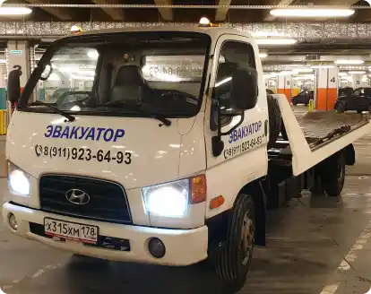

Эвакуатор

- Легковой автомобиль 5 000 руб
- Мотоцикл (крадроцикл и т.д.) 3 000 руб
- Внедорожник нет
- Микроавтобус нет
- Загородный тариф 50 руб/км
Эвакуатор авто. Всегда на связи! Быстро и надежно
Эвакуатор авто. Всегда на связи! Быстро и надежно
Круглосуточно. Стоянка в районе метро Технопарк, быстро доберусь в любую точку города.
Эвакуатор авто. Всегда на связи! Быстро и надежно
Круглосуточно. Стоянка в районе метро Технопарк, быстро доберусь в любую точку города.Круглосуточно. Стоянка в районе метро Технопарк, быстро доберусь в любую точку города.
Поломка авто или ДТП – случайностей на дороге
много. Решение одно – вызвать эвакуатор
и доставить неисправный автомобиль
на СТО/парковку или в гараж в Москве.
С помощью онлайн-сервиса Эварус вы сможете
заказать услугу эвакуатора в Москве (Московской
области) максимально быстро
и при этом сэкономить.
Мы предоставляем доступ к базе коммерческих
и частных эвакуаторов Москвы. Это надежные
компании, которые оперативно пришлют
спецтехнику вам на помощь и обеспечат
безопасную транспортировку авто.
Заказы на вызов эвакуатора в Москве перевозчики-партнеры “Тут Эвакуатор” принимают круглосуточно. Когда бы вы не позвонили, эвакуатор найдется всегда. Размещая заказ
на эвакуатор, ознакомьтесь с информацией
о транспортной компании, проконсультируйтесь
с ее специалистами и выберите оптимальный вариант перевозки своего ТС.
Примите во внимание, что одни и те же виды эвакуаторов рассчитаны на транспортировку авто разных классов. Вопрос заключается лишь в том, какой тип эвакуатор будет выгоднее задействовать в вашем случае. Следуя рекомендациям перевозчика, вы сможете недорого эвакуировать авто как в Москве, так и в области.
Стоимость эвакуации включает в себя оплату услуг по погрузке, перевозке и выгрузке авто, а также по подаче эвакуатора в пункт дислокации ТС в Москве
Грузоподъемность эвакуатора
Чем мощнее эвакуатор,
тем дороже обходится
ее эксплуатация,
тем внушительнее будет
сумма к оплате эвакуации
Предполагаемый пробег
Учитывается удаленность
стоянки эвакуатора
от местоположения ТС,
расстояние между пунктами
погрузки в Москве
и выгрузки авто
Дополнительное оборудование
При эвакуации машин
с серьезными поломками
перевозчики оснащают
эвакуатор вспомогательными
приспособлениями,
что закономерно отражается
на стоимости транспортировки.
Уровень сложности
При значительном повреждении
автомобиля погрузочно-
разгрузочные работы
усложняются. Они требуют
подключения водителя-
ператора высокой
квалификации
ТутЭвакуатор.Ру – это удобный сервис для тех, кому нужно недорого и быстро перевезти авто с техническими неисправностями или же с повреждениями, полученными при ДТП в Москве.
Услуги по эвакуации вы оплачиваете непосредственно исполнителю – транспортной компании, взявшейся за перевозку вашего ТС. Оплата производится по завершении эвакуации, после выгрузки авто в конечной точке в Москве.
Формы оплаты стандартные для Москвы: наличный/безналичный расчет или банковский перевод. Эварус не взимает комиссионные с клиентов за пользование сервисом.
При оформлении заказа перевозчик сообщит вам расчетное время прибытия эвакуатора в точку погрузки авто. Как правило, в Москве это происходит в течение 10-15 мин., но зависит от загруженности дорог Москвы и погодных условий. Перевозчик, принявший заказ, будет информировать вас о наличии дорожных пробок и возможной задержке подачи эвакуатора. Автопарки наших партнеров находятся во многих районах Москвы, поэтому мы рекомендуем вам выбрать ближайший эвакуатор, чтобы ускорить процесс транспортировки авто.
Эвакуатор используют для перевозки всех видов автотранспорта: от небольших квадроциклов до габаритных коммерческих авто. Эвакуатор способен транспортировать автомобили до 8 т.

Компактный и маневренный эвакуатор для транспортировки авто массой до 3,5 т. За счет вылета стрелы манипулятор осуществляет погрузку/разгрузку ТС
с расстояния до 5 м. Он удобен для эвакуации автомобилей
с узких улиц/дворов, небольших стоянок/парковок Москвы.
Чтобы выбрать эвакуатор с необходимыми техническими параметрами и минимизировать расходы, при вызове эвакуатора следует указать:
При помощи сервиса ТутЭвакуатор.Ру вы сможете вызвать эвакуатор в экстренных ситуациях, например, когда колеса авто заблокированы или ходовая ТС критически пострадала в результате аварии.
Перевозка автомобиля с заблокированными колесами возможна несколькими типами эвакуаторов:
На сайте Эварус представлены цены, выставленные перевозчиками за стандартную услугу эвакуации авто по Москве и области. Начальная стоимость транспортировки зависит от
габаритов и веса ТС: перевозка мотоцикла/малолитражки будет стоить дешевле, чем
внедорожника/минивена. Дороже всего обойдется эвакуация неисправной спецтехники и
грузового транспорта
Окончательная цена зависит от того, куда подавать эвакуатор и где впоследствии выгружать
автомобиль: Москва это будет или Московская область. Транспортировка по МО оплачивается
согласно прайсу, плюс тариф за каждый км пробега от МКАД. Суммарная оплата увеличится,
если машина находится в кювете/яме/гараже/водоеме и подъезд к ней усложнен. Стоимость
возрастет и при наличии заблокированных колес/рулевого управления или серьезного
повреждения ТС.
Все нюансы эвакуации авто вы сможете обсудить с перевозчиком. Ознакомившись с конкретной ситуацией, он озвучит цену и сроки подачи эвакуатора.
Во избежание незапланированных трат, сообщите диспетчерской службе подробные сведения о своем автомобиле и обстоятельствах его поломки.
Воспользовавшись онлайн-ресурсом Эварус, вы сократите время на поиск эвакуатора в Москве, МО и закажете услугу по оптимальной цене. Вам не придется обзванивать знакомых или долго искать телефон эвакуатора в интернете. Проанализируйте предложения на нашем сайте, выберите лучшие условия и стоимость перевозки.